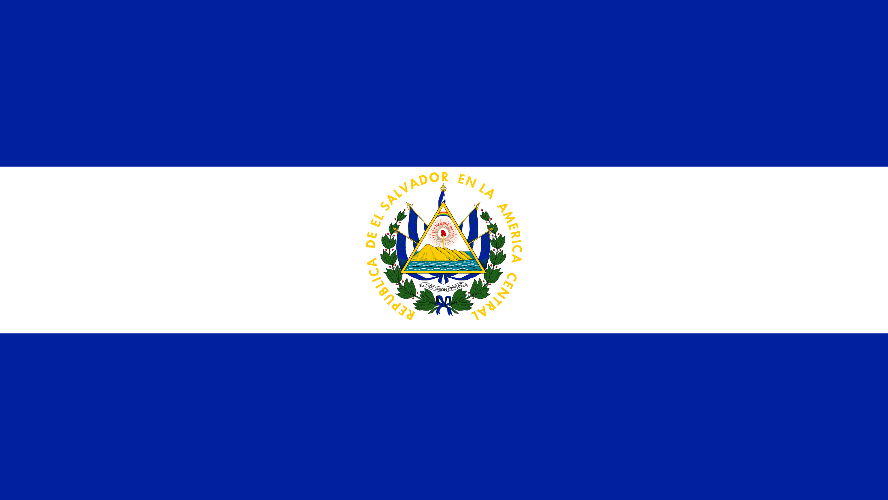
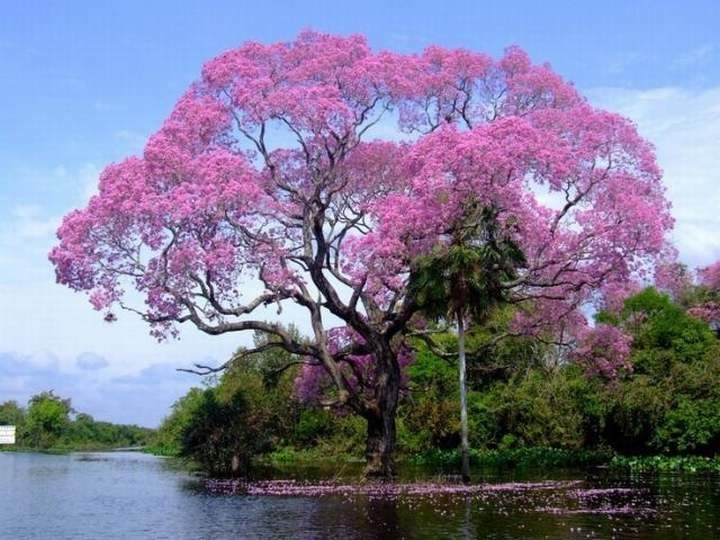
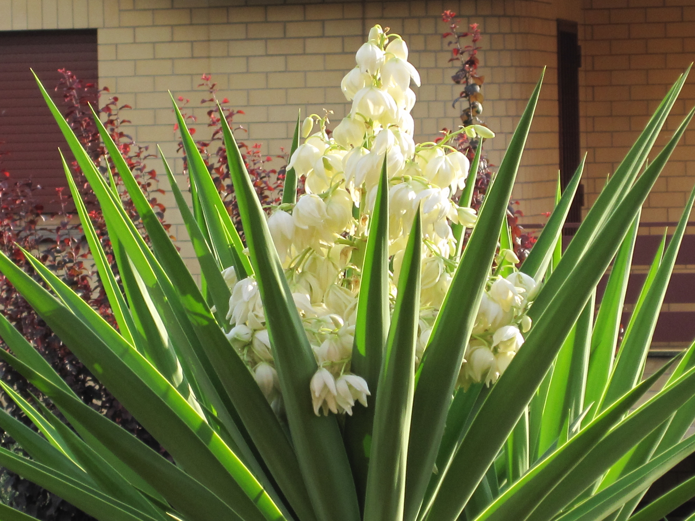
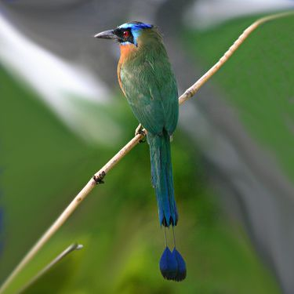

Simbolos Patrios
Bandera y Escudo Nacional
Oficialmente adoptado el 15 de septiembre de 1912, junto con la Bandera azul y blanco de la Federación. El diseño original del Escudo pertenece al calígrafo salvadoreño Rafael Barraza Rodríguez, quien venció en el concurso promovido al efecto por el Ministerio de Guerra y Marina. Tuvo 30 competidores. El Escudo tiene como base el antiguo Escudo de la Federación Centroamericana. Rafael Barraza Rodríguez le agregó los cinco pabellones de El Salvador que rodean al triángulo y los dos ramos de laurel que abarcan el conjunto.
Arbol Nacional
El maquilishuat o maquilishue: de macuil (cinco); isguat (pétalo), conocido también con el nombre de apamate, posee una belleza suprema y puede alcanzar una altura de hasta 25 metros. Su follaje es muy espeso y pasa floreado durante la mayor parte del año. Sus flores presentan variables combinaciones de colores entre rosa, naranja y rojo. Mide hasta 15 metros de altura. Cuando el Maquilishuat florece es uno de los más bellos de la región. Su madera una de las más finas de Centroamérica, es bastante apreciada en ebanistería, por su peso liviano y su color amarillo ámbar con vetas purpurinas. Su corteza tiene propiedades medicinales. El Maquilishuat es un árbol abundante en toda Centroamérica.
Flor Nacional
Esta flor es perteneciente a la familia de los Liliáceos y a la orden de las Liliflorales. Estas comprenden muchos géneros y especies. Además, la Flor de Izote es muy útil ya que es comestible y sirve para hacer textiles y se puede usar de manera ornamental.
Ave Nacional
Siendo el Torogoz un ave de singular belleza, por su policromo plumaje, inadaptable al cautiverio y símbolo de la unidad familiar, por la participación en pareja en el cuidado de sus pichones